카카오웹툰 추천 인기 순위 TOP 30
카카오웹툰에서 지금 연재 중인 작품을 카카오웹툰 공식 인기 순위 순서로 모았어요. 네이버웹툰·카카오웹툰·레진코믹스에서 조건에 맞는 작품 944개 중 인기 순으로 30개를 골랐어요. 인기 TOP 3: 관존 이강진, 극한견주 시즌2, 야구의 정치
2026-11-19 기준 · 성인 작품 제외
내 취향으로 더 좁혀서 추천받기 →-
1
 카카오웹툰
카카오웹툰관존 이강진
미친놈인가? 아니면 흔한 관심종자인가? 사람의 다름을 이해 못 하는 제자 이강진. 그리고 그걸 이해시켜주고자 하는 스승 곽노. 두 사제師弟의 따뜻한 휴먼스토리.
액션성장물카카오웹툰에서 보기 → -
2
 카카오웹툰
카카오웹툰극한견주 시즌2
약 먹기 싫어! 병원 가기 싫어! 내가 좋아하는 것만 하면서 살 거야! 9살 솜이, 어엿한 중년견이 되었으니 모든 게 순조로울 줄 알았다. B.U.T 우끼빡기도 안 하고, 미사일 발사도 안 하지만 어쩐지… 지능캐가 되어버렸다고나 할까? 그렇다고 물러날 수는 없다. 집사 10년차, 무엇…
개그힐링카카오웹툰에서 보기 → -
3
 카카오웹툰
카카오웹툰야구의 정치
구단에서 쫓겨난 야구 코치 맹정진. 선배의 도움으로 겨우 입단한 선데빌스 팀은 파벌 싸움으로 나락에 떨어진 상황. 이곳에서 버틸 방법은 정치밖에 없다. 실력만으론 부족한 야구판에서 살아남기 위해, 맹정진의 ‘정치’가 시작된다.
성장물액션카카오웹툰에서 보기 → -
4
 카카오웹툰
카카오웹툰이번 생은 가주가 되겠습니다
“…한번 해 보자. 내가 가주가 되는 거야.” 제국에서 제일가는 가문, 롬바르디의 사생아로 환생한 피렌티아. 게다가 이 가문은 막대한 부는 물론 외교와 문화까지 통달한 말그대로 제국의 역사 자체! 금수저 오브 금수저 인생 당첨! 앞으로는 탄탄대로일 거라 생각했는데…. 아버지는 돌아가시…
사이다로판회귀카카오웹툰에서 보기 → -
5
 카카오웹툰
카카오웹툰퀴퀴한 일기
내 주변에 반드시 한 명은 있을 것만 같은, 어쩌면 나 같기도 한 그녀의 일기. 어느덧 40대의 아기 엄마가 된 주인공 이보람과 그의 군단들의 이야기이다. 너무나 시시하고 쩨쩨해서 누구에게 털어놓기도 멋쩍은 일들이 작은 마음을 가진 그들에겐 늘 뜨겁고 강렬하다! 마음속 깊이 숨어있는…
공감개그카카오웹툰에서 보기 → -
6

-
7카카오웹툰
SSS급 죽어야 사는 헌터
F급 말단 헌터 ‘김공자‘. 랭킹 1위 ‘염제‘를 부러워하던 어느 날, 무려 S+급 스킬을 얻는다. 하지만 기쁨도 잠시, 어째 스킬 내용이 이상하다?! 상대의 스킬 중 1개를 복사한다,까지는 좋은데… "뭐? 내가 죽어야만 발동된다고?!" 죽어야 사는 헌터의 인간찬가 <SSS급 죽어야…
눈물샘자극학원물회귀카카오웹툰에서 보기 → -
8
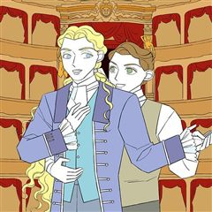
카카오웹툰카스트라토 ~거세 가수 이야기~
카스트라토는 아름다운 목소리를 유지하기 위해 성기 일부를 잘라낸 남성 가수를 말한다. 18세기 이탈리아 오페라가 꽃피우던 시기가 이들의 전성기였다. 음악학교이자 수도원인 피에타 데이 투르키니에서 어린 카스트라토 니콜라와 작곡가 지망생인 파트리크는 만나게 된다. 그리고 두 사람은 영원한…
개그성장물카카오웹툰에서 보기 → -
9
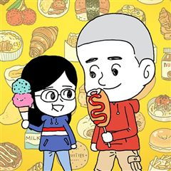
카카오웹툰오무라이스 잼잼
'음식'과 '가족'의 이야기를 담은 에세이 만화. 몇 개라도 먹을 수 있을 것 같은 '메추리알 조림', 빙글빙글 돌아가는 '회전초밥', 지구 반 바퀴 돌아 포르투갈에서 맛본 '에그타르트', 매콤상콤하게 볶아 입맛 도는 '마라샹궈', 짭짤한 밥도둑 '간장게장' 등 우리가 사랑하는 모든…
공감음식&요리카카오웹툰에서 보기 → -
10
 카카오웹툰
카카오웹툰가드패스
평소 먹는 것을 좋아해 뚱뚱하고 큰 체격을 가진 '임세준'. 그는 뚱보라는 놀림에도 신경 쓰지 않는 자존감이 높고 확고한 성격을 가졌다. 그에게 단 한 명의 친구 '서하진'. 그녀는 어릴 적부터 세준을 지켜주기 위해 늘 운동을 배워왔다. 어느 날 세준은 같은 반 일진과 트러블이 생기고…
사이다학원물배틀카카오웹툰에서 보기 → -
11
 카카오웹툰
카카오웹툰픽 미 업!
그 누구도 던전의 끝까지 오르지 못한 극악의 난이도를 자랑하는 모바일 가챠 게임 <픽 미 업!(Pick me up!)> 마스터 오브 마스터라 불리는 세계 랭킹 5위의 마스터 '로키'는 던전을 깨던 중 정신을 잃게 된다. 깨어나 보니 레벨도 1, 등급도 1성인 <픽 미 업!> 속 영웅…
사이다액션게임판타지카카오웹툰에서 보기 → -
12
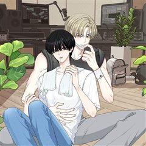
카카오웹툰연습생
굴곡진 인생에 재미를 잃은 소년 우주 앞에 나타난 가수 연습생 평화는 무엇보다도 재밌고 설레고 빛이 나는 존재였다. 그저 평화가 데뷔하는 모습을 옆에서 바라보는 것만으로도 충분하다 생각해온 우주는 어느새 그의 옆에 서고 싶다는 목표를 가지게 된다. 거침없이 다가오는 평화에게 소중한 감…
설렘폭발BL카카오웹툰에서 보기 → -
13
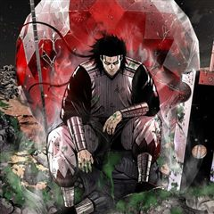
카카오웹툰레드스톰 - 왕의 귀환
피에 젖은 사막. 붉은 사막을 용납할 수 없던 한 소년. 소년은 사막의 무신이 되어 사막을 구하지만 이제는 세계가 피에 젖으려 한다. 무신은 이제 사막을 넘어 세계를 구하려 한다. “4년 만에 돌아온 그로우, 왕의 귀환. 이제는 사막에서 전쟁을 보여줘야 할 때다.”
액션성장물카카오웹툰에서 보기 → -
14카카오웹툰
세자, 죽이기
궁중 하녀 모제비는 동궁 침방의 나인, 남모란을 모시며 평온한 나날을 보내고 있었다. 그러던 어느 날, 남모란이 거처를 옮긴 뒤 행방이 묘연해진다. 불안한 마음에 모제비는 몰래 동궁에 숨어들어 모란의 행방을 묻고자 했으나, 그곳에서 뜻밖의 비밀을 엿보게 된다. 동궁에 감춰진 끔찍한 진…
공감정치카카오웹툰에서 보기 → -
15카카오웹툰
템빨
[신영우 (유저 네임: 그리드)] 세계 최고의 가상 현실 게임 <SATISFY>. 현실에서나, 게임 속에서나, 불운은 항상 그의 곁을 맴도는데.... 퀘스트 수행 중 우연히 발견한 게임 속 로또, '파그마의 기서'. 20억 명이 넘는 유저 중 유일한 최강의 레전드리 직업으로 전직. "…
사이다학원물게임판타지카카오웹툰에서 보기 → -
16
 카카오웹툰
카카오웹툰유부녀 킬러
육아휴직을 마치고 회사로 돌아간 5년차 유부녀 유보나. 보나는 저격총을 쥔 채 호텔에 있는 타깃을 향해 총구를 겨눈다. "탕!" 복귀 후 첫 미팅은 암살업무, 보나는 유부녀 ‘킬러’이다. 보나는 자신의 딸 율이와 시어머니가 운영하는 치킨집을 찾았는데, 테이블 뒤편에서 고아인 보나를 험…
카카오웹툰에서 보기 → -
17
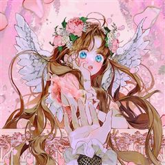
카카오웹툰엄마가 계약결혼 했다
리리카는 술주정뱅이 어머니를 모시고 하루하루 먹고 사는 빈민가의 소녀다. 그러던 어느날...... “꺄악, 뜨거워! 싫어!” 어머니가 비명을 지르며 잠에서 깨어나더니, “리리,살아있구나, 어려졌니?” 엉뚱한 소리를 하시고 “오늘이 며칠이지?” 정신을 못 차리시더니 “이럴수가, 돌아왔어…
힐링로판육아물카카오웹툰에서 보기 → -
18카카오웹툰
검술명가 막내아들
진 룬칸델 대륙 최고의 검술명가, 룬칸델의 막내아들 룬칸델 역사상 최악의 둔재 비참하게 쫓겨나 허무한 최후를 맞이한 그에게 다시 한 번 기회가 주어졌다. “너는 이 힘을 어떻게 사용하고 싶더냐?” “저를 위해 사용하고 싶습니다.” 전생의 기억과 압도적인 재능, 그리고 신과의 계약 최강…
액션회귀카카오웹툰에서 보기 → -
19카카오웹툰
황제궁 옆 마로니에 농장
'태양의 손'을 가진 농사 천재, 헤이즐 메이필드. 할아버지가 준 땅문서를 들고 설레는 마음으로 자신의 농장을 찾아가는데… "그 '대단히 높은 신분의 집주인'이… 황제였어?" 위대한 브라타니아 제국의 젊은 황제 이스칸다. 완전무결한 황궁을 꿈꾸던 그에게 닥친 최대 위기. "땅문서에 제…
힐링로판카카오웹툰에서 보기 → -
20카카오웹툰
무한의 마법사
마굿간에 버려져 평민으로 키워진 아이, 시로네. 타고난 통찰력으로 글까지 깨우친 아이는 도시로 나간 어느 날 그토록 궁금해하던 마법을 경험한다. 그 길로 마법사를 꿈꾸게 된 시로네. 하지만 신분의 장벽이 두터운 이 곳은 아이에게 냉혹하고, 그는 채 어른이 되기도 전에 이 세상의 이면을…
미스터리학원물성장물카카오웹툰에서 보기 → -
21
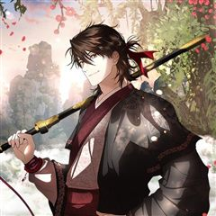
카카오웹툰무당기협
무림 사파의 수장인 혁련무강은 죽기 직전 불로초를 삼킨 후 눈을 떠보니 무당파 도동의 몸에 빙의되었다. 예전에 본인이 붕괴 직전까지 몰고 갔던 무당파에서 '진무'라는 이름의 도사로 다시 살게 된 그는 무당의 '양의신공'을 전수받기 위해 애쓰다 보니 뜻하지 않게 무당이 부흥하는데...!
사이다액션빙의카카오웹툰에서 보기 → -
22
 카카오웹툰
카카오웹툰수린당 성군전
[수린당 성군전] 선계와 인간계를 이을 단 한 명의 성군, ‘한울’. 지덕체를 두루 갖춘 완벽한 아이의 탄생에 선계의 신들은 신이 났다. 그것도 아주 지나치게! 과도한 기대는 때론 독이 될 수도 있는 법. 한울이를 금쪽이가 되지 않게 밝고 바른 아이로 키울 수 있을까? 성군의 운명을…
힐링카카오웹툰에서 보기 → -
23카카오웹툰
무장 - 무투전
고려를 지키는 무신이라 불리는 권. 그의 어린 시절부터 이야기는 시작된다. 주인공 권과 그의 형 정은 고려에서 가장 강했던 무인이자 노비였던 만적의 아들들이다. 아버지 만적이 노비 해방 운동을 일으키지만 실패로 끝나고 죽음을 맞자 정과 권은 누군가로부터 계속해서 목숨을 위협받는다. 살…
자극적인액션복수극카카오웹툰에서 보기 → -
24
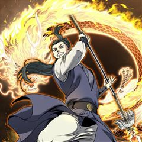
카카오웹툰로그인 무림
세상의 경계인 게이트에서 몬스터 사냥을 하는 헌터들이 잘 먹고 잘 사는 시대. 주인공 진태경은 최하위 헌터라 벌이가 시원찮다. 어느 날, 낡은 VR 게임기를 줍게 되고 접속하니 무림의 세계가 펼쳐진다. 우여곡절 끝에 현실로 돌아온 태경은 무림에서 얻었던 힘이 현실에서도 그대로 남아있음…
개그서스펜스액션게임판타지카카오웹툰에서 보기 → -
25카카오웹툰
무림에 떨어진 현대인
생존을 위해 아르바이트를 하는 만년 공시생인 나. 한밤중 배달을 하다 과속하던 차에 쓰러졌다. 뺑소니로 요절했던 죽음의 기억이 강렬한데, ‘……내가 조휘?’ 어느 순간 다 쓰러져 가는 조가철방의 차남이 되었다. 날아가는 새를 떨어뜨릴 권세도, 의지를 관철시킬 무력도 없다. 일가족을 몰…
사이다액션게임판타지카카오웹툰에서 보기 → -
26
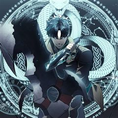
카카오웹툰재앙급 영웅님이 귀환하셨다
지상에 최강의 영웅이 있었다. “하지만 죽었잖아. 우리가 죽인 놈이 어떻게 돌아와?” “그러게. 돌아올 수 있으면 한번 돌아와 보라지.” 그런데 20년 만에 진짜 돌아와 버렸다? “뭘 그리 놀래? 왜. 양심에 찔릴 짓이라도 하셨나?” 이 XX들. 가만 안 둔다.
사이다학원물복수극카카오웹툰에서 보기 → -
27
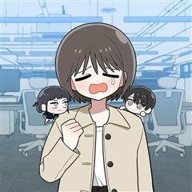
카카오웹툰인간관계는 너무 어려워!
인간관계는 왜 이렇게 어려운 걸까? 십년지기 친구 '홍주'에게 손절당한 '소곰'. 같은 무리의 친구들에게까지 외면받은 충격에 지난날을 돌아보며 새사람이 되기로 결심한다. 하지만 교수님의 추천으로 입사한 회사에서 하필이면 홍주와 다시 마주치고, 악몽 같던 인간관계는 직장으로 이어진다.…
공감설렘폭발카카오웹툰에서 보기 → -
28
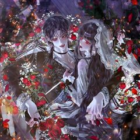
카카오웹툰세이렌: 악당과 계약 가족이 되었다
아리아는 계약 결혼을 제안했다. 그것도, 악마에게 영혼을 팔았다는 발렌타인의 대공자에게. 자신을 지키고, 그를 지키기 위해서. [나와 결혼해.] 아리아는 단풍잎 같은 손으로 쪽지와 함께 혼인 서약서를 내밀었다. [계약 결혼이니까 10년 뒤에 이혼…….] 그러자 어린 대공자는 쓰고 있던…
로판회귀카카오웹툰에서 보기 → -
29
 카카오웹툰
카카오웹툰데뷔 못 하면 죽는 병 걸림
4년 차 공시생, 낯선 몸에 빙의해 3년 전으로 돌아왔다. 그리고 그의 눈앞에 나타난 갑작스러운 상태창의 압박! [돌발!] [상태이상: '데뷔가 아니면 죽음을!' 발생!] 돌연사 위협 때문에 팔자에도 없던 아이돌에 도전하게 된 주인공의 대환장 일지. ※특이사항: 빙의 전 아이돌 데이터…
설렘폭발빙의카카오웹툰에서 보기 → -
30
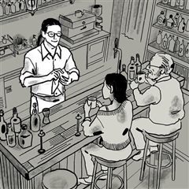
카카오웹툰인생이 레몬을 건네면 위스키를 더하라
하루의 끝, 작은 바에서 위스키 한 잔을 마시는 시간. 바텐더가 건네는 한 잔의 위스키를 사이에 두고 서로의 사연이 조용히 오간다. 누군가는 위로를 건네고, 누군가는 말없이 잔을 기울이며 혼자 눈물짓기도 한다. 인생은 때때로 레몬처럼 시리고 아린 맛을 남기지만, 위스키 잔을 천천히 비…
옴니버스카카오웹툰에서 보기 →